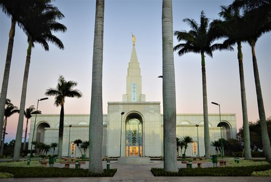
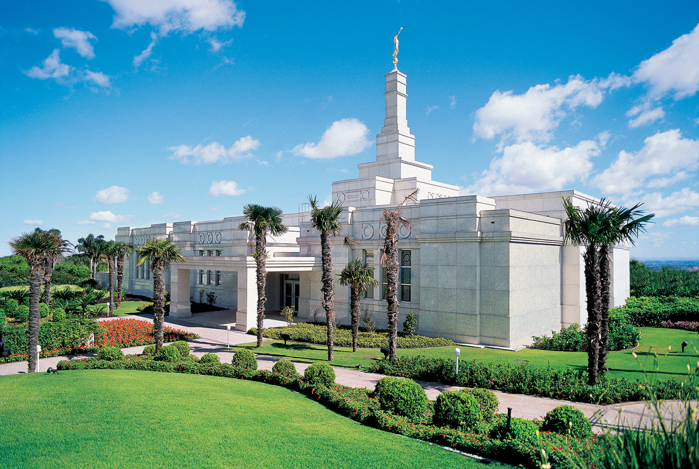
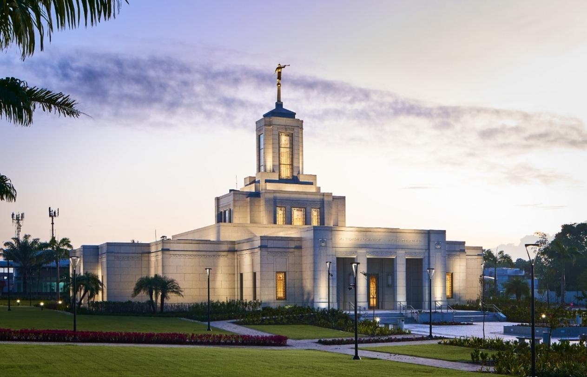
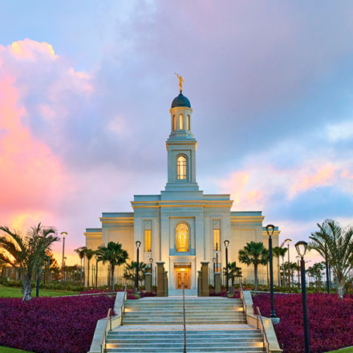
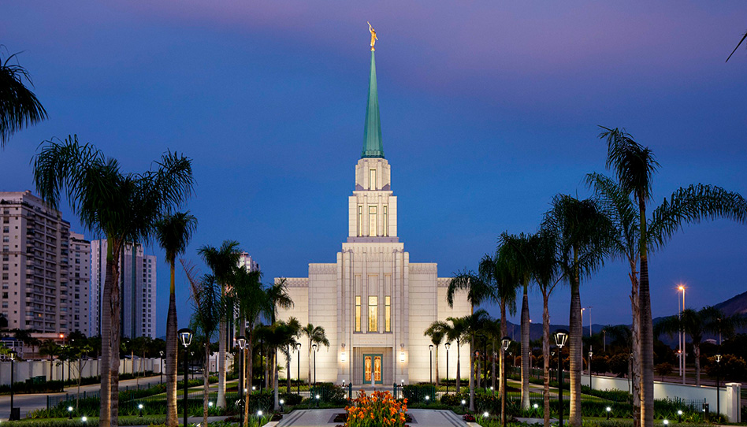
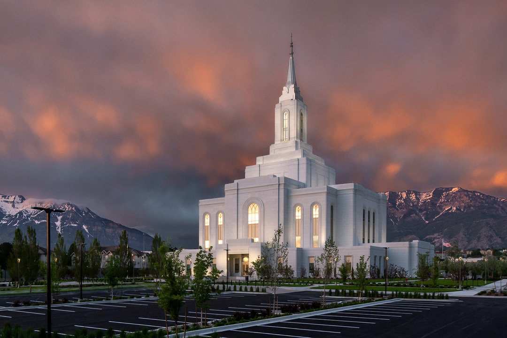
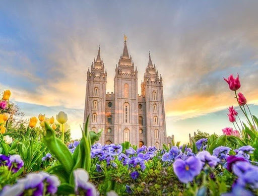

Álbum do Templo
☰
Página Inicial
Antigo
Novo
Grande
Pequeno
Galeria de Templos

Templo de Campinas
Templo de São Paulo
Templo de Manaus

Templo de Porto Alegre

Templo de Fortaleza

Templo de Belém

Templo do Rio de Janeiro

Templo de Orem

Templo de Salt Lake